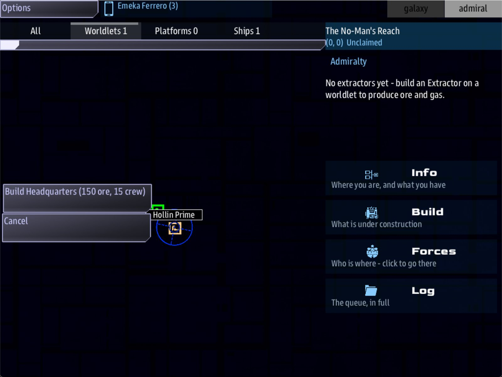

Class 5, Lecture 14 - The Admiral, part 1: the game from above¶
What you will have at the end¶
A second way to play a universe, and four things in it that you wrote. The Admiral does not fly a ship. The Admiral looks down on a whole system, builds on its worlds, raises fleets and sends them out. You will give that game a home world, three dials, an officer and two steps of research, and you will know what each line does because every number on this page was read out of the running game.
You will do it in a copy of the Open Universe mission, and not in MyUniverse. The
copy holds a finished Admiral's game to read and to change. Lecture 15 then carries your
four chapters into MyUniverse. The next section says how the two lectures fit.

The Admiral console: Hollin Prime selected, and the button "Build Headquarters (150 ore, 15 crew)".Read this first: two lectures, two folders¶
Your own universe can have an Admiral. When this page was first written it could
not: the Admiral's game ran only inside the Open Universe mission's own folder. That is
mended, and Lecture 15 does it in MyUniverse.
This lecture still works in a copy of the Open Universe mission, on purpose. The copy holds a small universe, Skirmish - The Broken Accord, that is nothing but an Admiral's game: three kinds of world, six officers, and no story to keep track of. It is the best place to learn what each line does. Everything you write today is four chapters of AMD, and they are the same four chapters Lecture 15 puts beside your bridge crew.
| This lecture | Lecture 15 | |
|---|---|---|
| Folder | AdmiralLab, a copy of OpenUniverse |
MyUniverse |
Mode: |
skirmish |
campaign |
| Who plays | An Admiral | A bridge crew, with an Admiral beside them or with that seat empty |
| You learn | What a world, a dial, an officer and a step of research do | How to switch the Admiral on in your own universe, and what it costs the crew |
Leave MyUniverse alone today.
The video¶
About 6 minutes. Subtitles are available in the player.
Before you start¶
- The
OpenUniversefolder inC:\Cosmos\data\missions, from Lecture 1, Stop 1. - The game closed.
MyUniverseis not touched in this lecture.
Words for this lecture:
| Word | Meaning |
|---|---|
| Admiral | A player who commands a side from above, with a map of a whole system and no ship of their own |
| Worldlet | A world the Admiral can build on. Each one gives ore, gas or crew |
| Platform | A thing the Admiral builds beside a worldlet: a headquarters, an extractor, a shipyard |
| Pool | A side's stock of one thing: its ore, its gas, its crew |
| Officer | A named captain the Admiral puts in command of a fleet |
| Research | A ladder of improvements, bought one step at a time |
Step 1 - Make the lab¶
Never change the OpenUniverse folder itself. An update replaces it, and you want the
original to compare with.
In File Explorer, go to C:\Cosmos\data\missions. Copy the OpenUniverse folder and
paste it beside itself. Rename the copy AdmiralLab. In VS Code, open the AdmiralLab
folder.
One warning about saves. A universe's save is named after the universe, not the folder.
The lab and the real Open Universe both hold a universe called Skirmish - The Broken
Accord, so they share one save:
common_data\saves\universe_save_skirmish_the_broken_accord_1.yaml. If you have a
Skirmish game you care about, move that file somewhere safe before you play the lab.
Step 2 - What an Admiral does¶
Read this once, so you know what you are writing for. Each button's words are the game's own.
| The Admiral | What happens |
|---|---|
| Selects the worldlet in the home system | One button: Build Headquarters (150 ore, 15 crew) |
| Presses it | "Construction started: Headquarters." The cost leaves the pools at once. About half a minute later the Headquarters stands |
| Selects the worldlet again | Eight more platforms are on offer |
| Builds an Extractor | Twenty seconds. Then the worldlet's Yields: start to arrive in the pools |
| Builds an Academy and a Shipyard, then selects the Shipyard | One button for each officer: Commission Commodore Ansel Vale - the Quartermaster |
| Commissions one | A fleet of three ships appears at the Shipyard, on the Admiral's side: two light cruisers and a battle cruiser. It costs 180 ore, 40 gas and 24 crew |
| Selects a ship of the fleet | Hail, and its orders: Escort the flagship, Patrol the system, Strike hostiles, Salvage wrecks, Withdraw to base |
| Builds a Lab and selects it | One button for each step of research that is open |
Several platforms can be building at once.
The platforms are the same in every universe. You do not write them. Their costs are read from the game's buttons, and what each is for is from the game's own guide.
| Platform | Costs | What it is for |
|---|---|---|
| Headquarters | 150 ore, 15 crew | The first build. Nothing else is offered until it stands |
| Extractor | 60 ore, 5 crew | Brings the worldlet's yields into the pools |
| Shipyard | 200 ore, 20 crew | Where fleets form. Research needs one too |
| Academy | 120 ore, 10 crew | Needed before any officer can be commissioned |
| Bastion | 220 ore, 12 crew | A fort that draws raids on to itself |
| Relay Gate | 400 ore, 120 gas, 20 crew | Keeps income coming from a system the Admiral has left |
| Depot | 160 ore, 40 gas, 10 crew | Supplies fleets working away from home |
| Sensor Relay | 200 ore, 20 crew | One more fleet at a time |
| Lab | 180 ore, 20 crew | Where research is started |
Step 3 - Read the arena file¶
In the lab, open skirmish_arena.amd. It is 160 lines, and it is the smallest universe
that has an Admiral in it. Read down it with this table.
| Chapter | What is in it | You have written one like it |
|---|---|---|
| The title record | Universe, and the name on the start screen |
Lecture 2 |
## [Scenario](scenario) |
Mode: skirmish |
Lecture 2 |
## [Worldlets](worldlets) |
Three kinds of world: Cinder World, Veiled Giant, Haven World | New today |
## [Admiralty](admiralty) |
One dial: Worldlet chance: 70% |
New today |
## [Regions](regions) |
Two regions | Lecture 5 |
## [Officers](officers) |
Six officers | New today. They look like Lecture 8's captains |
There is no Research chapter. You will add one.
Mode: decides whether there is an Admiral at all. Each of these was played:
Mode: |
Admiral |
|---|---|
skirmish |
Yes. The pace is brisk |
war |
Yes. The pace is epic |
sandbox |
Yes. The pace is standard |
No Mode: line at all |
Yes. The game takes it as sandbox |
story |
No. No console, no worldlet at home, and the pools are empty |
campaign |
Yes, in this file. A campaign has an Admiral when the file has its own Admiralty chapter and a Worldlets chapter, and the arena has both. The pace is epic. Lecture 15 is about this row |
Step 4 - A world of your own¶
A record in the Worldlets chapter is a kind of world. The game puts one in the home system, and scatters the others by chance.
Find ### [Cinder World](cinder). Above it, add a world, with an empty line after it.
### [Hollin Prime](hollin_prime)
---
Also: economy
Yields: crew 3, ore 4, gas 1
Reserve: unlimited
Palette: base #2f6e3a, clouds #ffffff
---
The world the Compact farms. People, a little industry, and somewhere to come home to.
| Line | What it means |
|---|---|
Also: economy |
This record yields something. Without the line, lint does not know Yields: and Reserve:. Write it on a world. A research step does not need it: see Step 7 |
Yields: |
What one Extractor here brings in each minute. Three things can be yielded: ore, gas and crew |
Reserve: |
How much there is before the world runs dry. unlimited never runs dry |
Palette: |
How the world is painted: a base color, a clouds color, and for a striped giant, bands and a number |
| The line below the fence | What the place is |
Which world is home. The home system always gets one worldlet, so that an Admiral
can always start. It is the first record in the chapter that says Reserve: unlimited.
Before your change that was Haven World, the third in the file. You wrote Hollin Prime
above it, so home is Hollin Prime now.
Other systems get a worldlet by chance. Worldlet chance: 70%, in the Admiralty
chapter, is that chance.
Step 5 - The dials¶
The Admiralty chapter is a fence of dials. Every one has a number of its own if you leave it out. Find the chapter and add three lines to its fence.
## [Admiralty](admiralty)
---
Worldlet chance: 70%
Start ore: 500
Command points: 2
Skirmish pressure: none
---
| Dial | What it sets | The game's own |
|---|---|---|
Worldlet chance: |
The chance a system other than home has a worldlet | 0%. With no line, only home has one |
Start ore:, Start gas:, Start crew: |
The pools at the start | 300, 100, 40 |
Storage: |
The most a pool can hold | 600 |
Command points: |
How many fleets the Admiral can have at once | 3 |
Fleet gas burn: |
Gas a fleet uses each minute while it is under orders | 2 |
Requisition budget: |
Credits to spend on hardware | 800 credits |
Skirmish pressure: |
border or none. The game's guide says border sends raids at the Admiral's platforms once there is a fleet. No raid was played for this page |
border |
Skirmish interval: |
Seconds between raids | 240 |
MIA timer: |
Seconds to rescue an officer whose fleet was destroyed | 300 |
Relay rate: |
The share of income a Relay Gate keeps paying | 50% |
Economy pace: |
brisk, standard or epic. One word that scales yields, reserves, storage and the starting pools together |
From the Mode: |
The numbers you write are multiplied today. You wrote Start ore: 500. The game
started with 6,000. Storage: is 600, and the pools held 7,200. Hollin Prime yields 4
ore a minute, and an Extractor there brought in 64.
Two things multiply them. Mode: skirmish sets the pace to brisk, which is fair. And
the game's makers left a test setting on that runs every Admiral's economy eight times
fast, so that they could watch it work. That one is theirs to turn off. It is still on,
and Lecture 15 gives the same table for a campaign.
| You write | Multiplied by, in this lab |
|---|---|
A Yields: number |
16 |
Start ore:, Start gas:, Start crew: |
12 |
Storage: |
12 |
A Reserve: number |
16 |
| A platform's cost, a fleet's cost, a research step's cost and time | Not multiplied |
So do not balance your numbers today. Write the ones the story suggests, keep the pools far above what a Headquarters and an Extractor cost, and tune when the test setting is gone.
Step 6 - An officer¶
Officers are the Admiral's captains. Find ### [Commodore Ansel Vale](vale) and add one
above it, with an empty line after.
### [Commodore Ilse Maren](maren)
---
Title: the Harbormaster
Values: by-the-book 40, honest 30
Face: female
---
Thirty years of freight schedules. Her fleets come home fueled, counted and on time.
| Line | What it means |
|---|---|
Title: |
What follows the name on the Shipyard's button and on her cards |
Values: |
The same traits a side or a captain values, from Lecture 4. Here three of them change what a fleet can do |
Face: |
male or female |
| The line below the fence | Who this is |
Three traits do something for a fleet. The numbers are the game's own, for the seven officers in the lab.
Trait in Values: |
What it does | At 30 | At 40 |
|---|---|---|---|
by-the-book |
The fleet burns less gas | 0.85 of the usual | 0.80 |
resourceful |
The fleet brings back more salvage | 1.38 times | 1.50 times |
fearsome |
The fleet engages from farther away | 1.30 times | 1.40 times |
Every other trait is character. honest 30 does nothing to Maren's fleet. It is there
for the day a crew talks to her.
When she is commissioned the Admiral gets a card in her name: "Commodore Ilse Maren, the Harbormaster", and one line from the game's own stock, such as "Fleet formed and standing by at the yard."
Step 7 - Research¶
Go to the end of skirmish_arena.amd. Leave an empty line, and add a chapter.
## [Research](research)
### [Deeper Silos](silos)
---
Branch: engineering
Costs: ore 120, gas 40
Time: 40
Unlocks: storage 500
---
Bigger tanks and deeper bunkers. The stockpiles hold more.
### [Hot Drills](hot_drills)
---
Branch: engineering
Costs: ore 180, gas 90
Time: 60
Requires: silos
Unlocks: extraction 25%
---
Every extractor works a quarter again as fast.
| Line | What it means |
|---|---|
Branch: |
A word for the ladder this step is on. It is shown in square brackets on the Lab's button |
Costs: |
What it takes from the pools when it is started |
Time: |
Seconds until it is done |
Requires: |
The key of the step that must be done first |
Unlocks: |
What it gives. One of three phrases: storage and a number, extraction and a percent, or requisition and the name of a piece of hardware |
What happened when it was played:
- The Lab offered one button: Research Deeper Silos [engineering]. Hot Drills was
not offered, because of its
Requires:. - Pressed: "Research started: Deeper Silos." 120 ore and 40 gas left the pools.
- Forty seconds later: "Research complete: Deeper Silos." Each pool could now hold 7,700 where it held 7,200. The 500 is not multiplied.
- The Lab now offered Research Hot Drills [engineering].
Starting research needs a Shipyard as well as a Lab. That was read in the game's own notes; every game played for this page had both.
A research record needs no Also: economy line. Costs: and Time: are a research
step's own fields, and lint knows them. Time: is a plain number of seconds, with that
line or without it: Time: 40 was read as 40 both ways. (When this page was first
written lint warned about both fields, and the line that quieted the warnings also
turned forty seconds into forty minutes. Both are mended.)
Step 8 - Check it¶
== captains\ashfang.amd ==
clean
== cast\frontier.amd ==
[WARNING] line 30:1: `Patience` is not a field a lifeform has. Check the spelling. A lifeform has: color, data, deliver_to, face, file, flies... (a mission adds its own with amd_register_fields) (unknown-field)
== default.amd ==
clean
== dialogue\ashfang.amd ==
[WARNING] line 24:85: `ashfang_deal` emits signal `ashfang_paid` but no `//signal/ashfang_paid` route was found in the mission's .mast (nor a known driver signal) (signal-no-route)
== dialogue\frontier.amd ==
clean
== dialogue\officers.amd ==
clean
== dialogue\verdant.amd ==
clean
== jobs.amd ==
clean
== lore.amd ==
clean
== quiet_shore.amd ==
clean
== scout_signal.amd ==
clean
== silver_reach.amd ==
clean
== skirmish_arena.amd ==
clean
13 amd + 14 mast file(s): 0 error(s), 2 warning(s)
Two warnings, and neither is yours. Both were there before you changed anything, in
files of the Open Universe mission that you did not touch. Your own file,
skirmish_arena.amd, says clean.
For this lecture, your checkpoint is those two warnings and no others.
Each row below was made on purpose, one change to the finished file, then linted, then played.
Mistakes lint finds
| The mistake | What the game does | What lint says |
|---|---|---|
Yeilds: crew 3, ore 4, gas 1 |
The world yields nothing | A warning: "Yeilds is not a field a landmark has" (unknown-field) |
A world with no Also: economy line |
Nothing changes. The game reads Yields: and Reserve: all the same |
Two warnings: "Yields is not a field a landmark has", and the same for Reserve (unknown-field). Here the cure is safe: write the line |
A world written with two hashes, or ## [Worldlets](worlds) |
There is no Admiral at all: no console, no world at home, empty pools | A warning on each Palette: line: "this record is being read as a map" (unknown-field) |
| Two worlds with the same key | The second replaces the first | A warning: "is the key of 2 records in the same place" (duplicate-key) |
Comand points: 2 |
Ignored. The game's own number, 3, stands | A warning: "Did you mean Command_points?" (unknown-field). Write it with a space |
Mode: skirmsh |
The game takes it as sandbox: there is an Admiral, at the standard pace |
A warning: "is not a valid map value (story/sandbox/skirmish/war/campaign)" (unknown-enum-value) |
Economy pace: fast, or any word that is not one of the three |
Taken as standard |
A warning: "Economy pace: fast is not a valid map value (brisk/standard/epic)" (unknown-enum-value) |
Scene: maren_hail on an officer, with no such conversation |
She is commissioned as usual | A warning: "Scene points at maren_hail, which is not a defined node" (dangling-scene) |
| An officer written with two hashes | The Shipyard offers no officers at all | Warnings on every officer after her: "this record is being read as a map" (unknown-field) |
## [Research](tech) |
The Lab offers nothing | A warning on every line of each step's fence: "this record is being read as a map because of where it sits (under tech)" (unknown-field) |
Mistakes lint cannot see
Lint gives the same two warnings and nothing else for every one of these.
| The mistake | What the game does |
|---|---|
Yields: crew 3, iron 4, gas 1, a thing that is not ore, gas or crew |
The world is given a yield of iron, which no pool holds |
Yields: crew, ore, gas, with no numbers |
It yields nothing of each |
Yields: crew 3 ore 4 gas 1, with no commas |
One yield with a nonsense name. Nothing arrives |
Reserve: lots |
The world is not unlimited any more, so it is not the home world. Home went back to Haven World |
Reserve: 5000 on the world you meant for home |
The same: home is the first world that says unlimited |
No Reserve: line |
The same as unlimited |
Palette: green, a word and not the three parts |
No palette. The world is painted the game's own way |
Worldlet chance: 70, with no percent sign |
Read as seven thousand percent. Every system has a worldlet |
Start ore: 10 |
The pool starts at 120, less than a Headquarters costs. The Admiral can build nothing, and so can never earn anything |
Start ore: plenty |
The game stops with an error as it starts |
Start ore: 500 written in the Scenario chapter and not the Admiralty chapter |
Ignored. The pool starts from the game's own 300 |
Command points: 0 |
No fleet can ever be commissioned: "No command points free." |
| No Admiralty chapter at all | There is still an Admiral. Every dial is the game's own, and only home has a worldlet |
Mode: Skirmish, with a capital |
Works as skirmish |
Values: by-the-buk 40 on an officer |
The trait is kept as written and does nothing. No bonus |
Values: by-the-book, honest, with no numbers |
Both are nought. No bonus |
No Values: line |
An officer with no bonus |
No Title: line |
The Shipyard's button ends in a dash with nothing after it: "Commission Commodore Ilse Maren - ". Her card's title ends in a comma |
Face: woman |
Kept as written. Nobody has seen what face that gives |
## [Officers](captains) |
The Shipyard offers no officers. Lint is silent, because captains is a chapter it knows |
Requires: silo, or the step's name, Requires: Deeper Silos |
Hot Drills is never offered, even when Deeper Silos is done |
Unlocks: storege 500 |
The step can be researched, and gives nothing |
Unlocks: faster drills |
The same |
Costs: iron 120, gas 40 |
The step can never be started: "Not enough resources (120 iron, 40 gas)." |
No Costs: line |
The step is free |
Time: forty |
The game stops with an error when the step is started |
No Time: line |
Thirty seconds |
No Branch: line |
The button reads [general] |
Two things that look wrong and are not:
| You wrote | What the game does |
|---|---|
Values: by_the_book 40, with underscores |
Works. Hyphens and underscores are the same here |
Unlocks: extraction 25, with no percent sign |
Works, as 25 percent |
Also: economy in a research record |
Works. Time: 40 is still 40 seconds, and lint says nothing |
So check these by eye:
- One world in the Worldlets chapter says
Reserve: unlimited, and it is the one you want at home. - Every
Yields:andCosts:is a word, a space and a number, with commas between. - The three words that can be yielded or spent are
ore,gasandcrew. - Every
Requires:is the key of another step, the word in round brackets. - Every
Unlocks:starts withstorage,extractionorrequisition.
Step 9 - Play it¶
On the server's start screen, set Universe to Skirmish - The Broken Accord and Start to New Game, then start the mission.
In the second window, pick Admiral from the console list and press ready.
- The home system has one worldlet, and it is Hollin Prime. Press Worldlets above the map to see only it.
- Click its marker on the map. The menu that opens has one button: Build Headquarters (150 ore, 15 crew). Press it and wait half a minute.
- Click it again. Build an Extractor, an Academy, a Shipyard and a Lab, one at a time: the Admiralty builds one thing at once, and the menu waits for it. The Shipyard is the slowest, at 45 seconds. Build, on the right, shows what is under way.
- Press Info. The ore, gas and crew pools are there. Each platform cost some.
- Select the Shipyard. Commission Commodore Ilse Maren - the Harbormaster is the first button, because she is first in the file.
- Press Forces: Commodore Ilse Maren holds the Shipyard with three ships, shown on the map as Fleet F1.
- Select the Lab. Research Deeper Silos [engineering]. Forty seconds later, select the Lab again: Research Hot Drills [engineering].
What you need to know about the Admiral's game
| Fact | What it means for a writer |
|---|---|
| You write four chapters: Worldlets, Admiralty, Officers, Research. The platforms, the fleet's three ships and its orders are the game's | Your part is the worlds, the people and the ladder |
Home's world is the first one with Reserve: unlimited |
Put the world you want the Admiral to start on first |
An officer's Values: are Lecture 4's traits |
Three of them change a fleet. The rest are who she is |
| A fleet is always the same three ships, on the Admiral's own side | An Admiral for the Hollin Compact would still fly these hulls today |
Mode: turns the Admiral on and off |
story never has an Admiral, whatever chapters are in the file. campaign has one when the file has its own Admiralty and Worldlets chapters |
| The economy is multiplied today | Do not balance it yet |
Taking it to your own universe¶
The Admiral comes to MyUniverse in three moves. Lecture 15 does each of them, and
plays the result. They are here so that you know the size of the job.
| Move | Where | What Lecture 15 found |
|---|---|---|
| The Admiral's library is listed, on a line of its own under the universe's | story.json |
A mission made from today's template has the line already. By itself it changes nothing |
Mode: story becomes Mode: campaign |
kestrel_verge.amd, the Scenario chapter |
By itself it changes nothing the crew can see |
| Your Worldlets, Admiralty, Officers and Research chapters are copied across | The end of kestrel_verge.amd |
With all three moves made, the Admiral console is offered and the home system has your world |
Write your four chapters for your own universe while you are in the lab: Hollin Prime and Maren are already the Verge's.
If something goes wrong¶
| What you see | Likely cause |
|---|---|
| No Admiral console | The universe on the start screen is not Skirmish - The Broken Accord. Or its Mode: is story. Or the Worldlets chapter has no records |
| No worldlet in the home system | The Worldlets chapter's key is not worldlets, or a world was written with two hashes |
| Home's world is not the one you wrote | Another record with Reserve: unlimited is above yours |
| A world that never yields anything | Yields: names something that is not ore, gas or crew, or has no numbers |
| The Shipyard offers no officers | There is no Academy yet. Or the Officers chapter's key is not officers |
| "No command points free." | Command points: fleets already exist. Yours says 2 |
| The Lab offers nothing | Every open step is done or being researched. Or the Research chapter's key is not research |
| A research step is never offered | Its Requires: is not the key of another step |
| A continued game has the old pools | Start with New Game, or delete the Skirmish save |
Exercise¶
- In the lab, write the world your own side would start on. Put it first.
- Write one more kind of world that runs dry: a number after
Reserve:. - Write two officers for your own universe. Give one a trait from the table in Step 6 and one none of them. Say in each one's last line what kind of commander that makes.
- Write a ladder of three research steps, each needing the one before.
- Play it as far as your third step of research.
- Read
AdmiralLab\mast.runtime.logafterward. It should be empty.
Checkpoint¶
You are done when all five are true:
sbs lint AdmiralLabgives the two warnings that were there before, and nothing else.- The home system's worldlet is yours.
- The Shipyard offers your officer by name and title.
- The Lab offers your first step, and your second only after the first is done.
- You can say, without this page, the three moves that take it to
MyUniverse.
Next¶
Lecture 15 takes these four chapters into MyUniverse, sets its mode to campaign, and
seats an Admiral beside your bridge crew. If the Admiral is not for you, go straight to
Lecture 16, the capstone. It does not need one.
Further reading¶
- "The Admiralty (a side to command)" in the Open Universe writer's walkthrough. It is the guide the three moves above come from.
default.amdin the Open Universe mission: a large universe with all four chapters.- Lecture 4 of this class: the traits an officer's
Values:are made of.
Download this lecture's finished files (a zip of its example folder).